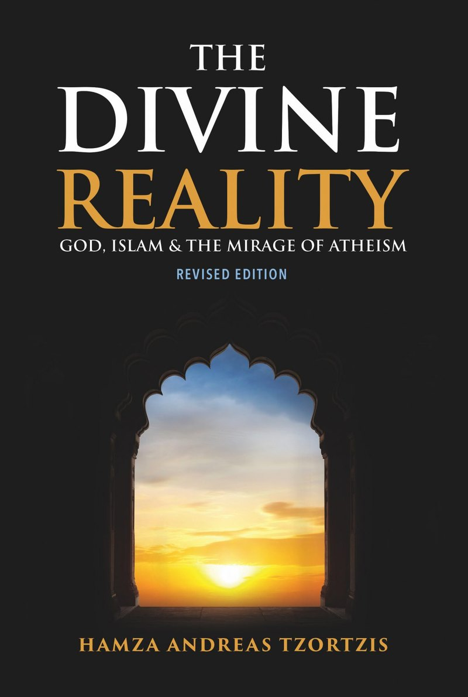

Is there a God?
For the curious and the sceptical
- Divine Link: The Argument from Dependency23 min
- The Qur’an’s Argument for God’s Existence38 min
- Has Science Disproved God?37 min
Tip: “Quran”, “Qur’an” and “Qurʾān” all match. Press Esc to close.
Author · Researcher · Founder & CEO, Sapience Institute
Making a compassionate, rational case for God, the Qur’an and the meaning of life, in books, essays, lectures and conversation.
A saying he returns to“Compassion beautifies everything.” The Prophet Muhammad ﷺ
Archive portrait (2018): to be replaced by a commissioned shoot
Start here
For the curious and the sceptical
For believers seeking conviction
Begin with Why Love GodFor students and researchers
Begin with the book
The book
God, Islam & the Mirage of Atheism
A compelling case for the rational and spiritual foundations of Islam, while intelligently and compassionately deconstructing atheism: an existential, spiritual and rational journey through the arguments for God, the Qur’an, the Prophethood of Muhammad ﷺ, and why we must know, love and worship God.
“A pioneering effort which will hopefully guide the reader, and other writers, on how to answer the questions related to God’s existence and worship.”
Shaykh Omar Suleiman
“A much needed and welcome addition to the field of modern Islamic thought.”
Dr Yasir Qadhi
Essays
Imagine you entered an amazing palace. As you walk through the hallway, you are struck by the size of the building and decide to explore by opening the nearest door. As you enter the room, you see hundreds of chairs and tables…
The Qur’an teaches that we must believe in all the prophets and messengers, and that they were all chosen to help guide humanity to the ultimate truth of God’s oneness and our servitude to Him. The Qur’an mentions many of the prophets…
SpiritualityRumi was right. When pen is put to paper and writes about love, it breaks in two. Trying to describe love is almost impossible. Love is truly a powerful, unique and irresistible force…
Theology & PhilosophyImagine you walk out of your house and on your street you find a row of dominoes that stretch far beyond what your eyes can see. You start to hear a noise that gets slightly louder as time passes. This noise is…
Topics
Arguments for God’s existence, morality, consciousness and the claims of atheism.
Browse 6Its literary challenge, its authorship, and how to read it alongside science.
Browse 3The case for Muhammad ﷺ as God’s final messenger, and Jesus in Islam.
Browse 5Love of God, worship, fear and hope: the inner life of faith.
Browse 3Islam in public life, extremism, and responses to events.
Browseوَرَحْمَتِي وَسِعَتْ كُلَّ شَيْءٍ
“…but My mercy encompasses all things.”
The Qur’an 7:156
Podcast & conversations
Speaking
Lectures, debates and masterclasses for universities, institutions and communities.
Where he has spoken
Sapience Institute
Hamza is Founder and CEO of Sapience Institute, which develops and empowers people and organisations to share and defend Islam intellectually.
The Intellectual Ambassador Programme: a structured, year-long course with accreditation.
Visit the Academy Talk to someoneFree, private one-to-one mentoring for people with doubts, new Muslims and those who support them.
Book a session Read & watchThe institute’s library of research, articles and recorded teaching.
Explore Sapience